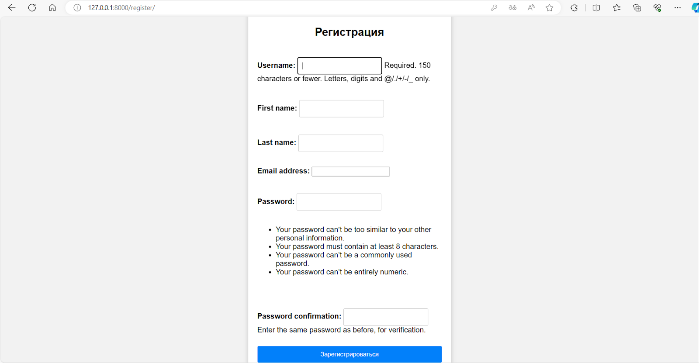
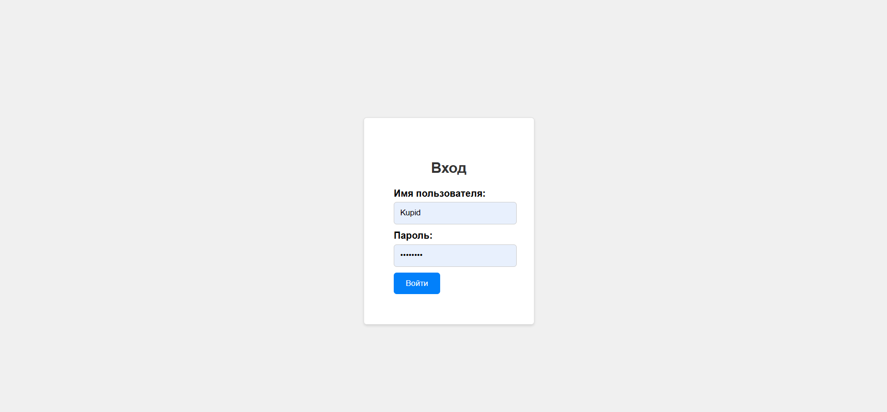
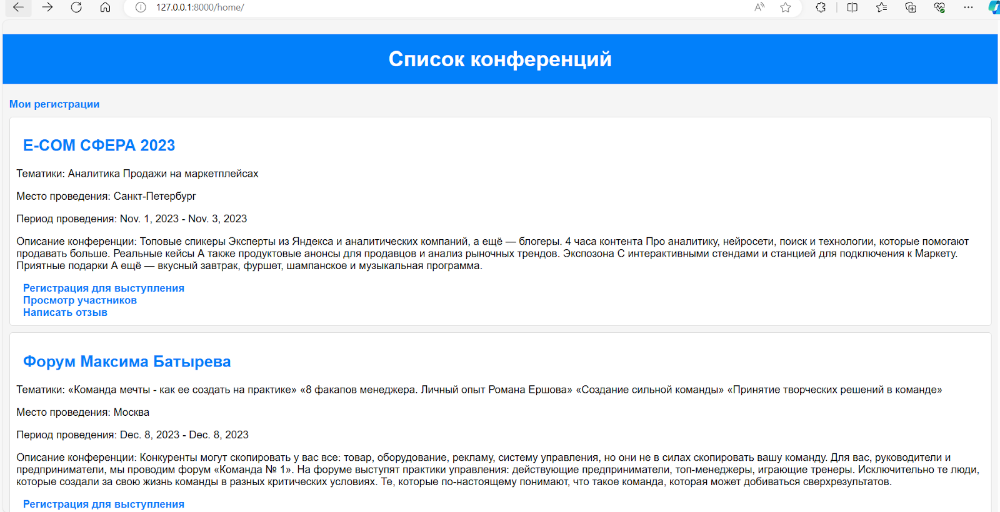
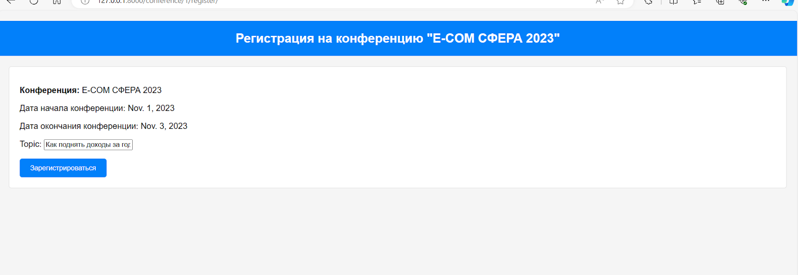
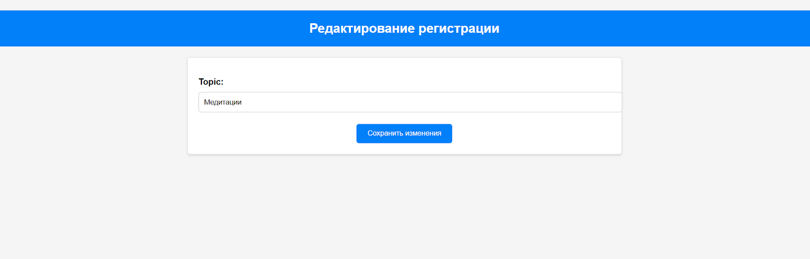
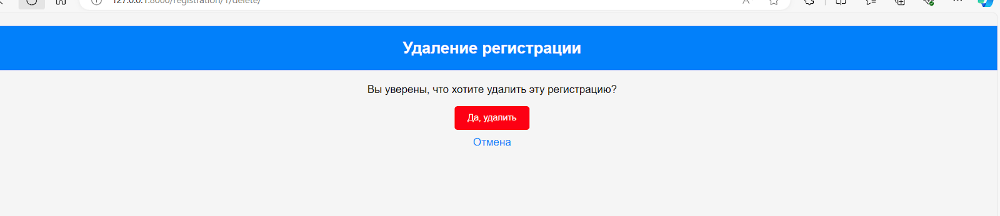
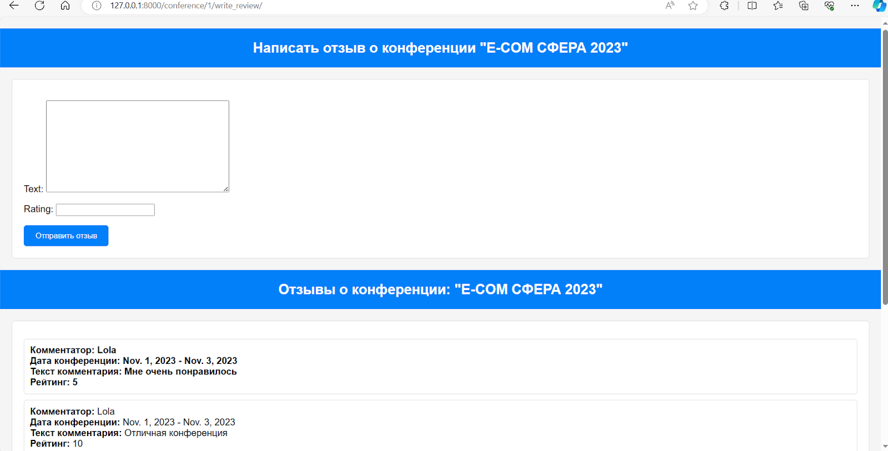
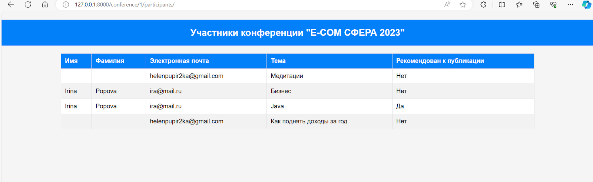
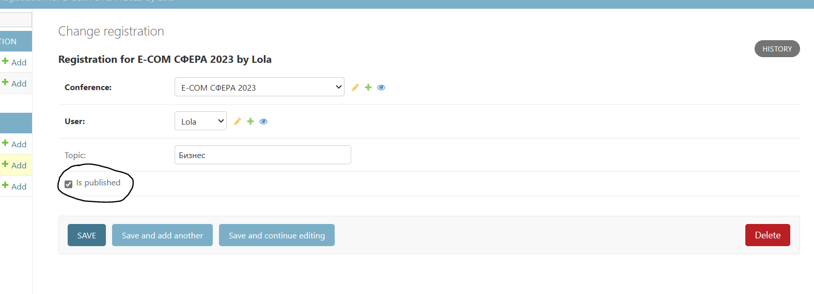

Работа веб-сервиса
По варианту №5 мне нужно было реализовать веб-сервис "Список научных конференций"
Интерфейс каждой конференции описывает ее название, список тематик, место проведения, период проведения, описание конференций, описание место проведения, условия участия.
Функционал сервиса состоит из следующих пунктов:
- Регистрация нового пользователя в системе 
- Вход в систему уже существующего пользователя 
- Просмотр конференций 
- Регистрация авторов для выступлений 
- Возможность редактирования своих регистраций 
- Возможность удаления своих регистраций 
- Написание отзывов к конференциям 
- Просмотр списка участников конференции 
- Возможность администратора указания результатов выступления (рекомендован к публикации или нет) 